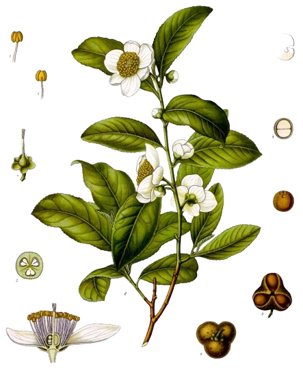
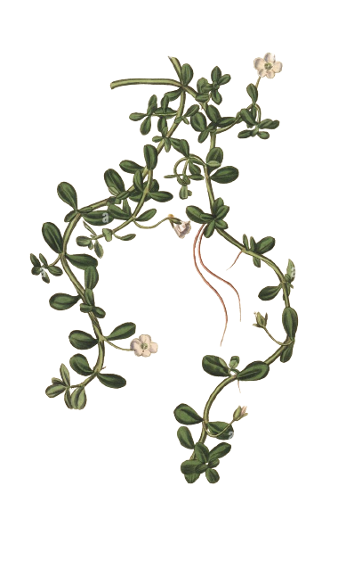

Nootrópicos Naturais
Nesta seção, exploraremos as nuances que distinguem os nootrópicos naturais e analisaremos de perto os efeitos que cada um deles oferece.
L-teanina
L-teanina
Encontrada no chá verde, a L-teanina pode ajudar a melhorar a atenção e a reduzir os efeitos negativos da cafeína, como a ansiedade.
Bacopa monnieri
Bacopa monnieri
Uma erva tradicional da medicina ayurvédica, a bacopa monnieri é associada ao aprimoramento da memória e do aprendizado.
Mucuna pruriens
Mucuna pruriens
É uma planta rica em levodopa, que pode melhorar humor e função cognitiva como nootrópico natural, mas requer supervisão médica devido a possíveis efeitos colaterais decorrentes do aumento de dopamina.
Ginkgo biloba
Ginkgo biloba
Este extrato de planta é frequentemente usado para melhorar o fluxo sanguíneo cerebral, o que pode resultar em melhorias na memória e no foco.
curcumina
curcumina
É um composto natural encontrado na cúrcuma. Benefícios: Redução da inflamação no cérebro, Melhoria do fluxo sanguíneo cerebral, potencial neuro proteção, Possível melhora da função cognitiva.
Cogumelo do Leão
Cogumelo do Leão
É um nootrópico natural com benefícios notáveis para a mente. Seus compostos bioativos podem fortalecer conexões neurais, ampliando a memória e a concentração.